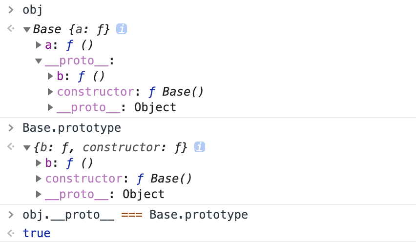

今天，一个技术群里小朋友提出一个问题:
Object.prototype.a = function () {
console.log('a')
}
Function.prototype.b = function () {
console.log('b')
}
function F(){}
var f = new F();
f.a();
f.b();
F.a();
F.b();我默念心中的万能公式，答案一下就出来了：
a;
报错（f.b is not a function）；
a；
b；
这下子出题人产生了疑惑，你是控制台敲出来的吧！
但其实，原型链真的很简单。话不多说，开始表演！
首先，我们简单介绍一下，实例化一个对象（new）到底做了什么？
function Base() {
this.a = function () {
console.log('我是Base中的a')
}
}
Base.prototype.b = function () {
console.log('我是Base prototype上的b')
}
var obj = new Base();
// 实际上做了以下几件事
// var obj = {};
// obj.__proto__ = Base.prototype;
// Base.call(obj);
// 第一行，我们创建了一个空对象obj
// 第二行，我们将这个空对象的__proto__成员指向了Base函数对象prototype成员对象
// 第三行，我们将Base函数中this上的成员赋值给obj这就去控制台检验一下:

好，可以开始解题，回顾一下小朋友提出的问题：
Object.prototype.a = function () { console.log('a') }
Function.prototype.b = function () { console.log('b') }
function F(){}
var f = new F();
f.a();f.b();F.a();F.b();我们展开f的原型链：
f.__proto__ === F.prototype;
// 因为prototype本质也是对象，继承自Object，所以F.prototype.__proto__ === Object.prototype
f.__proto__.__proto__ === Object.prototype;
// 按上一条，会得出Object.prototype.__proto__ = Object.prototype，那样会永无止境，因此js中把Object.prototype.__proto_直接赋值成null
f.__proto__.__proto__.__proto__ === null;我们会发现，f的原型链中，根本没有Function.prototype什么事，所以答案出来了，f.a()输出a，f.b会报错；
我们再展开F的原型链：
F.__proto__ === Function.prototype;
// 因为prototype本质也是对象，继承自Object，所以Function.prototype.__proto__ === Object.prototype
F.__proto__.__proto__ === Object.prototype;
f.__proto__.__proto__.__proto__ === null;OK，Function.prototype和Object.prototype都在原型链上，都会有输出，答案揭晓，F.a()输出a，F.b()输出b；
前文我提到了万能公式，吃瓜群众表示，难道公式就是这个？当然不是，请听我细细道来；
刚才的故事还没结束，我心血来潮回问了小朋友一个问题，就刚才你的条件Object.a();Object.b();Function.a();Function.b();会输出什么？
小朋友答曰：a; b; a; b;
不错不错，但他接了一句（他的1和4其实答错了，后续会告诉原因）：
1. Object.a(); 直接prototype取值；
2. Object是Function.prototype的实例，可以继承b；
3. Function.__proto__ === Function.prototype；
4. Function.b();直接prototype取值；
？？？Object.a第一步就直接到Object.prototype上找？这可能也是大家弄不清原型链的一大问题，话不多说，请摊开Object的原型链：
// Object是函数，继承自Function
Object.__proto__ === Function.prototype;
Object.__proto__.__proto__ === Object.prototype;
Object.__proto__.__proto__.__proto__ === null;因此，细心的朋友已经发现他的错误了，Object.a其实是访问到Object.__proto__.__proto__时才从Object.prototype上找到相应的a()；
同样展开Function的原型链，就不再赘述了：
// Function自身也是个函数，因此继承自己
Function.__proto__ === Function.prototype;
Function.__proto__.__proto__ === Object.prototype;
Function.__proto__.__proto__.__proto__ === null;为了引导出万能公式，我再次发出了灵魂拷问：
// 在刚才的前提下
var c = 1;
console.a();// a
console.b();// console.b is not a function
c.a();// a
c.b();// c.b is not a function
console.log.a();// a
console.log.b();// b这时，学会展开原型链的同学已经明白答案了，我就直接说出我的万能公式：
在js中，万物皆对象，只要在Object.prototype上写的方法，万物都能访问到；而Function.prototype上的方法，只有能通过()方式调用的函数，才能访问到；
因此我只需要查看这个对象可不可以通过函数()的形式调用，就能确定他是否能访问Function.prototype。再次回顾出题人的问题，f仅仅是个对象，f()是会报not is a function错误的，而F()是可以调用的函数，一下子得出 a 报错 a b的答案，学到了是不是感觉自己也棒棒哒~~~
最终Cober老师还是给出了自己的杀手锏面试题，毕竟原型链还有另一层面试方法：
Object.prototype.a = function () {
console.log('我是Object中的a')
}
Object.prototype.b = function(){
console.log('我是Object中的b')
}
Function.prototype.a = function () {
console.log('我是Function中的a')
}
Function.prototype.b = function () {
console.log('我是Function中的b')
}
function F(){
this.a = function () {
console.log('我是F中的a')
}
}
F.prototype.a = function () {
console.log('我是F的prototype中的a')
}
var f = new F();
f.a();f.b();F.a();F.b();Object.a();Object.b();Function.a();Function.b();（提示：原型链调用顺序是f.a -> f.__proto__.a -> f.__proto__.__proto__.a，直到访问到null）